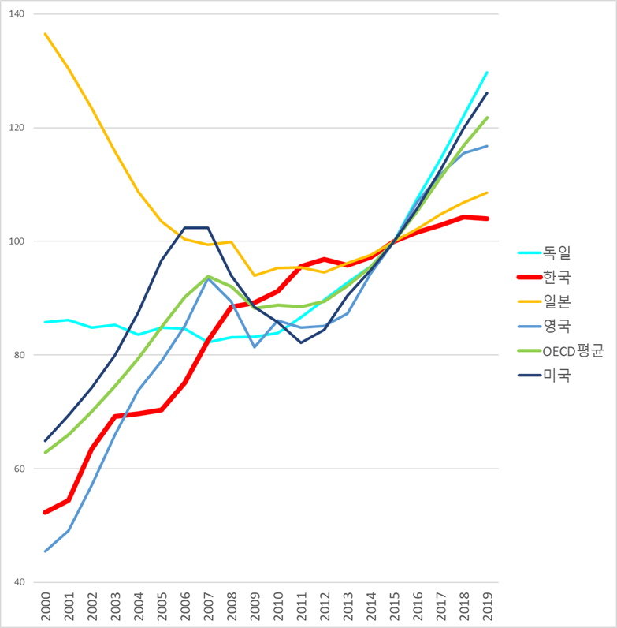
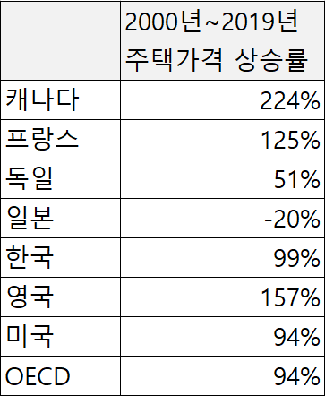
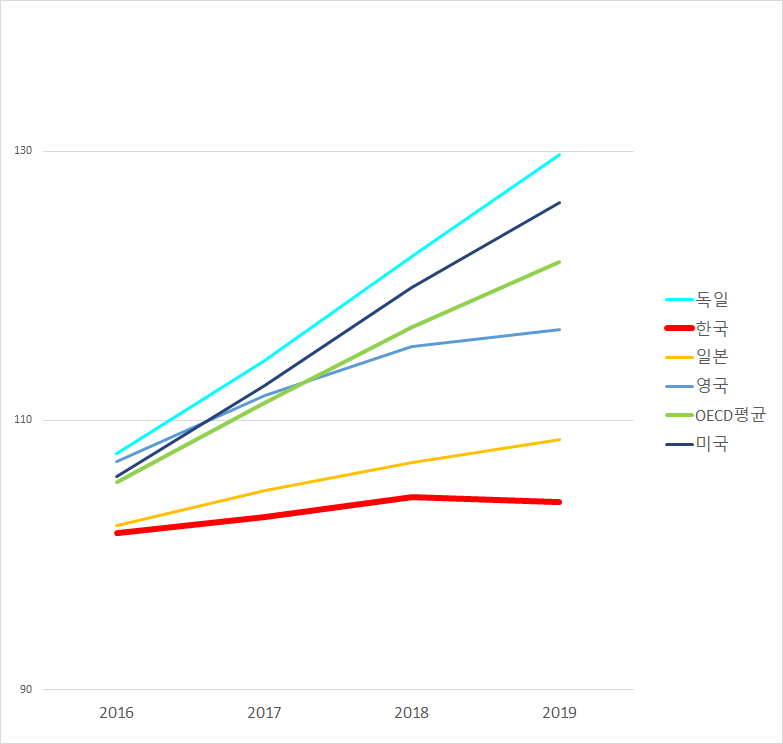
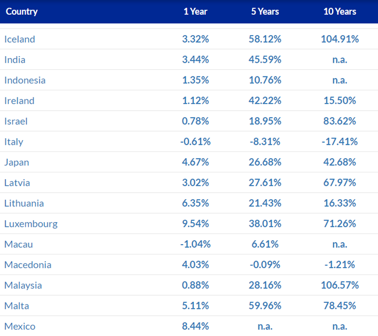
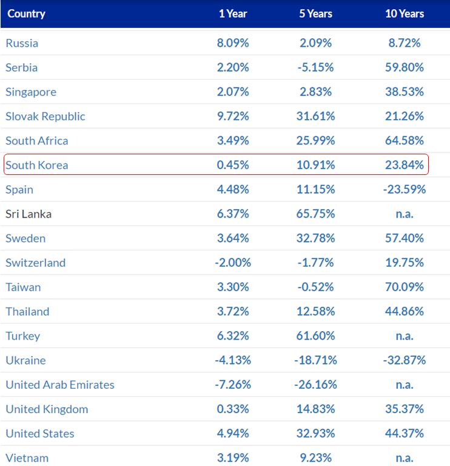
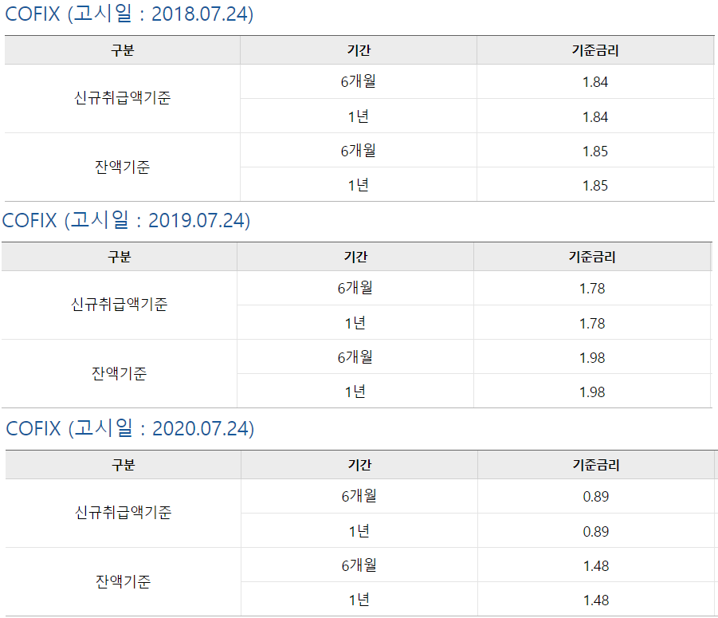

세계 주요국 주택 가격 상승률 추이
게시: 2020-07-30T06:30:47+09:00
세금과 교육, 그리고 주택 문제는 경제 문제 같지만 실은 철저하게 정치적인 문제입니다. 그 중에서도 세금 문제야말로 진보든 보수든 치열하게 득표 활동을 벌이는 진짜 목표입니다. 거기에 좌익사상이 물들었네 종북빨갱이네 도덕성이 결여되었네 하는 것들은 그야말로 본질을 흐리기 위한 흙탕물에 불과합니다.
과거 보수측에서 주로 내세워서 재미를 본 전략은 '도덕성은 어떨지 몰라도 경제 개발 능력을 생각하면 역시 보수'라는 인식이었습니다. 사실 아무런 근거가 없는 인식인데, 주로 박정희 시절 고도 성장 신화 때문에 그런 생각들을 하는 것 같습니다.
일단 인식이 그렇게 박히면 그 다음은 쉽습니다. 사회의 모든 분야가 그렇습니다만, 경제라는 것도 온갖 주체들이 복잡한 상호 작용을 하면서 돌아가는 것이다보니 특정 정권이 잘해서 성장하고 침체되는 것은 아닙니다. 하지만 포장은 쉽습니다. 가령 경제 성과가 좋지 않아도, "좋지 않은 대외 환경에도 불구하고 보수 정권이 애를 써서 그나마 선방했다"라고 할 수 있고, 대외 환경이 좋아서 득을 보았어도 "역시 보수 정권 덕분에 경제가 성장했다" 라고 할 수 있습니다.
요즘 부동산 가격 동향이 뉴스를 가득 채우고 있지요. 어떤 분은 공급과 수요라는 고등학교 수준의 경제학만 알아도 주택 공급을 해야 주택 가격이 잡힌다고 주장하시지만, 역사적으로 우리나라에서 재건축을 하든 신도시 개발을 하든 공급을 확대했을 때 주택 가격은 항상 폭등했습니다. 가령 이번에 태릉 군 골프장에 아파트를 짓겠다는 이야기가 나오자마자 그 인근의 아파트 가격이 막 상승하고 있지요.
하지만 그에 대해서도 재건축 규제를 풀어주어야 주택 가격이 떨어진다는 주장은 굴하지 않습니다. 그나마 그렇게 재건축과 신도시 개발을 통해 신규 공급이 되었기 때문에 그 정도로 올랐던 것이지, 만약 묶어놓았다면 더 급격한 상승이 있었을 것이라고 주장할 수 있습니다. 사실 그런 주장이 틀렸다는 증거도 없지요 뭐.
어떤 분은 주택 가격은 수요 공급이 아니라 통화량에 따라 오르고 내린다고 주장하십니다. 제가 볼 때는 그게 오히려 맞는 말씀 같습니다만, 저는 경제학자가 아니니 제 견해는 전혀 중요하지 않습니다. 그냥 외부 자료에서 가져온 그래프 몇개만 올려놓겠습니다. 지난 20년, 10년 정도의 기간에 걸친 세계 주택 가격 동향입니다. 많이 오르는 것이 좋은 건지 적게 오르는 것이 좋은 건지는 제가 판단하지 않겠습니다만, 일본처럼 가격이 하락하는 경우는 사실 매우 좋지 않은 경우라는 것에 대해서는 다들 의견이 일치하는 것 같습니다.

그래프가 눈에 잘 안 들어오시는 분들을 위해 표로 20년치 상승률을 표로 만들면 아래와 같습니다. 참고로 한국은 1998년 IMF 구제금융 직후 주택 가격이 크게 하락한 상태였다는 점을 상기하시기 바랍니다.

현정부가 들어선 것이 2017년이니, 2016년 이후 자료만 보면 이렇습니다. 사실 이건 다들 관심있어하는 수도권 아파트 가격만 보여주는 그래프가 아니라 전국 주택 가격을 보여주는 것이라서 체감 상승률과는 많이 다릅니다. 다만 (당연히) 세계적으로도 대도시 주택 가격이 주로 오른다는 점을 감안해서 보면, 다른 나라들의 주택 가격 상승은 더 심하다는 것은 알 수 있습니다.
아직 주택을 갖고 있지 않은 분들꼐서 아래 그래프에서 유의해야 할 점은, '그러니까 현정권은 다른 나라들과 비교하여 그나마 선방 중이네, 욕하지 말아야겠다' 라는 것이 아닙니다. 우리나라는 외국 자본에 대해 개방적인 구조라서 외국 금융 상황에 동기화될 수 밖에 없습니다. 주요 OECD 국가들의 부동산이 저렇게 올랐는데 우리는 저것 밖에 오르지 않았다면, 앞으로는 더 오를 수도 있다는 것을 뜻합니다. 코로나-19 사태로 인한 저금리와 양적완화가 얼마나 지속될까요 ? 1년? 2년? 그 동안에는 전세계 주택 가격이 계속 오르지 않을까 생각합니다.

Source : https://data.oecd.org/price/housing-prices.htm
 
Source : https://www.globalpropertyguide.com/home-price-trends
참고로 주택 가격은 수요-공급이 아니라 시중 자금의 유동성에 따라 오르내린다는 주장이 맞다면, 결국 금리가 주택 가격 동향의 (전부는 아니더라도) 핵심 지표 역할을 할 겁니다. 주택 담보 대출 금리의 기준이 되는 코픽스 기준금리의 최근 3년 동향은 아래와 같습니다.

우리나라 금리는 결국 전세계 금융시장, 특히 미국 금리와 연계될 수 밖에 없는데, 현재 미국 30년 주택 담보 대출 금리는 역대급으로 낮은 2.98%를 찍고 눈곱만큼 반등하여 3% 정도라고 합니다. 어쩌면 2.8% 대로 더 떨어질 수도 있다고 예측하는 사람도 있지만, 대부분은 금리가 추가로 더 떨어질 여력은 없으며 아무리 더 떨어져도 2.5% 이하로는 내려가지 않을 거라고 예측한답니다. 낮은 금리가 집값 상승에 어떤 영향을 주는지야 다들 아실테니 설명이 필요 없겠습니다만, 아래 기사에서 예를 든 것은 이렇습니다. 가령 30만 달러(약 3억6천만원)를 1년 전에 주택 담보로 대출 받았다면 4.52%의 금리로 받았을 것이고, 그 경우 매월 $1,542를 부담해야 했습니다. 그러나 같은 금액을 지금 3% 금리로 받는다면 한달 부담액은 $1,266에 불과하다고 합니다. 한달에 $276, 대략 33만원이 절약되는 셈입니다.
finance.yahoo.com/news/mortgage-rates-continue-amaze-surveys-163200786.html
finance.yahoo.com/news/mortgage-rates-u-rise-first-140000734.html